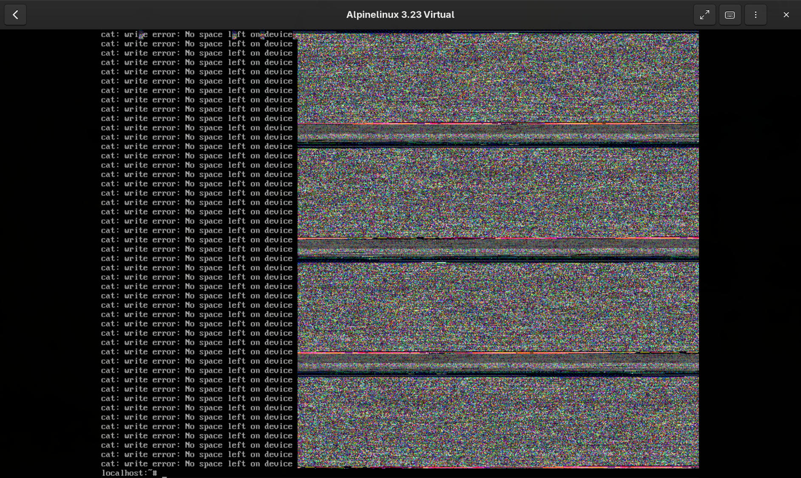
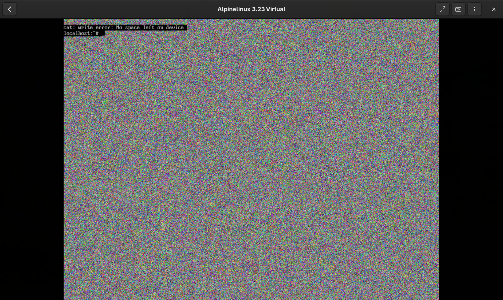

Sistema de archivos
El sistema de archivos en Linux puede ser algo diferente si vienes de Windows, pero su estructura básica es bastante simple.
Directorios principales
Ya hemos visto comandos básicos para explorar directorios, vamos a ver que hay en la raíz de nuestro sistema:
datadiego@fedora:~$ ls /
afs boot etc lib media opt root sbin sys usr
bin dev home lib64 mnt proc run srv tmp var
Son bastantes, vamos a clasificarlos según que contienen de manera general:
/bin: Binarios de comandos esenciales./boot: Archivos estáticos del cargador de arranque./home: Directorios de usuario./dev: Archivos de dispositivos./etc: Configuración del sistema específica del equipo./lib: Bibliotecas compartidas esenciales y módulos del kernel./media: Punto de montaje para medios extraíbles./mnt: Punto de montaje para montar sistemas de archivos temporalmente./opt: Paquetes de software adicionales./root: Directorio personal del usuario root (administrador del sistema)./sbin: Binarios esenciales del sistema./srv: Datos de los servicios proporcionados por este sistema./tmp: Archivos temporales./usr: Jerarquía secundaria del sistema./var: Datos variables.
No vamos a comentarlos todos, si quieres algo más detallado de cada uno de los directorios te aconsejo consultar The Linux Documentation Program, donde encontrarás más detalladamente cada uno.
Ten en cuenta que muchos directorios y subdirectorios de los que verás cuando explores tu sistema ya no se usan, en muchos casos, están ahí por compatibilidad.
/tmp
Carpeta para archivos temporales, muchos programas utilizan este directorio para escribir archivos que usan durante su uso.
Todo lo que esté en este directorio se elimina al reiniciar el sistema (o periódicamente según la política de limpieza configurada).
Cuando pruebo comandos nuevos, es el directorio donde suelo trabajar para probarlos, pero también donde suelo empezar proyectos y pruebas antes de decidirme a crear un repositorio.
Trabajar en este directorio hace que mi sistema esté mas limpio y ordenado. Lo que merece la pena conservar acaba en un repositorio en github propio, o en una carpeta de notas, ejemplos y proyectos donde conservo de manera más general el trabajo.
/run
Sistema de archivos temporal (tmpfs) que almacena datos de ejecución como archivos PID, sockets y estado de servicios.
En sistemas modernos, también es donde se montan automáticamente los dispositivos extraíbles (USBs, discos externos) en /run/media/<usuario>/. Antes se montaban en /media, y aún puedes encontrar ese directorio en algunas distros como punto de montaje manual o automático.
/home
Es donde cada usuario tiene su carpeta donde puede almacenar los archivos y directorios donde trabaja, tenemos un atajo para el home de nuestro usuario actual usando ~:
/tmp ❯ ls /home/datadiego/
Permissions Size User Date Modified Name
drwxr-xr-x - datadiego 11 Jul 10:41 Documents
drwxr-xr-x - datadiego 25 Jul 13:59 Downloads
drwxr-xr-x - datadiego 14 Jun 09:34 Music
drwxr-xr-x - datadiego 2 Jul 21:15 Notes
drwxr-xr-x - datadiego 21 Jul 14:11 Pictures
drwxr-xr-x - datadiego 22 Jul 19:36 Projects
drwxr-xr-x - datadiego 18 Jun 23:37 Videos
drwxr-xr-x - datadiego 22 Jul 09:48 VMs
drwxr-xr-x - datadiego 23 Jun 12:27 Work
/tmp ❯ ls ~
Permissions Size User Date Modified Name
drwxr-xr-x - datadiego 11 Jul 10:41 Documents
drwxr-xr-x - datadiego 25 Jul 13:59 Downloads
drwxr-xr-x - datadiego 14 Jun 09:34 Music
drwxr-xr-x - datadiego 2 Jul 21:15 Notes
drwxr-xr-x - datadiego 21 Jul 14:11 Pictures
drwxr-xr-x - datadiego 22 Jul 19:36 Projects
drwxr-xr-x - datadiego 18 Jun 23:37 Videos
drwxr-xr-x - datadiego 22 Jul 09:48 VMs
drwxr-xr-x - datadiego 23 Jun 12:27 Work
/root
Es el home del administrador, el usuario root.
/mnt
Punto de montaje para montar sistemas de archivos manualmente desde la terminal con el comando mount. A diferencia de /run/media, aquí no se monta nada automáticamente.
/bin
Aqui encontrarás todos los binarios de comandos que están presentes en cualquier sistema linux.
Dependiendo de tu distro, si haces ls -l /bin:
Verás que todo el directorio es un symlink que apunta a /usr/bin.
Antiguamente estaban separados, pero en sistemas modernos, se unificaron para simplificar la estructura de archivos de Linux.
Si usas which o whereis para ver donde está localizado cualquier comando básico te dirá donde se encuentra su binario:
blog-nekoweb master ❯ which ls
/usr/bin/ls
blog-nekoweb master ❯ which mkdir
/usr/bin/mkdir
blog-nekoweb master ❯ which echo
/usr/bin/echo
/usr
Es el directorio con más datos, y uno de los más importantes.
Contiene todos los binarios, documentación y librerias que usan los usuarios.
Sigue la siguiente jerarquia:
Donde:
bin: Ejecutableslib: Libreriasshare: Datos independientes, iconos, documentación...include: Cabeceras para desarrollosbin: Ejecutables de administración
Por ejemplo, el programa figlet nos permite crear ascii art usando diferentes fuentes:
blog-nekoweb master ❯ figlet "hello" -f slant
__ ____
/ /_ ___ / / /___
/ __ \/ _ \/ / / __ \
/ / / / __/ / / /_/ /
/_/ /_/\___/_/_/\____/
blog-nekoweb master ❯ whereis figlet
figlet: /usr/bin/figlet /usr/share/figlet /usr/share/man/man6/figlet.6.gz
Podemos ver que esta localizado en /usr/bin/figlet, su documentación en /usr/share/man/man6/figlet.6.gz y los archivos que usa como fuentes en /usr/share/figlet/
blog-nekoweb master ❯ ls /usr/share/figlet/
Permissions Size User Date Modified Name
drwxr-xr-x - root 29 Jun 09:21 fonts
.rw-r--r-- 1.5k datadiego 9 Jul 13:38 1Row.flf
.rw-r--r-- 8.8k datadiego 9 Jul 13:38 3-D.flf
.rw-r--r-- 13k datadiego 9 Jul 13:38 3D-ASCII.flf
.rw-r--r-- 14k datadiego 9 Jul 13:38 3d.flf
.rw-r--r-- 23k datadiego 9 Jul 13:38 3d_diagonal.flf
.rw-r--r-- 25k datadiego 9 Jul 13:38 '3D Diagonal.flf'
.rw-r--r-- 3.9k datadiego 9 Jul 13:38 3x5.flf
.rw-r--r-- 4.4k datadiego 9 Jul 13:38 4Max.flf
.rw-r--r-- 8.3k datadiego 9 Jul 13:38 '5 Line Oblique.flf'
.rw-r--r-- 8.8k datadiego 9 Jul 13:38 5lineoblique.flf
blog-nekoweb master ✗ figlet "hello" -f /usr/share/figlet/3-D.flf
** ** **
/** /** /**
/** ***** /** /** ******
/****** **///** /** /** **////**
/**///**/******* /** /**/** /**
/** /**/**//// /** /**/** /**
/** /**//****** *** ***//******
// // ////// /// /// //////
En /usr/sbin originalmente estaban los binarios para el administrador, fueron unificados, ahora mismo encontrarás los mismos binarios que en /usr/bin/ en muchas distros.
Pasa igual con /sbin, se mantiene por compatibilidad histórica, a dia de hoy, Linux se mueve hacia la unificación de estos directorios por simpleza.
En /usr/local encontramos aplicaciones que hemos compilado manualmente, y que siguen esta jerarquia:
Es la misma arquitectura que vemos en /usr, pero reservada para las aplicaciones que el usuario ha instalado manualmente y no mediante el gestor de paquetes.
/opt
Software de terceros autoconenido, cada carpeta tendrá su propio bin, lib, share.
/etc
Es donde tenemos todos los archivos de configuración de nuestros programas y servicios.
Por ejemplo, encontrarás tus archivos para configurar SSH:
~ ❯ ls /etc/ssh/
Permissions Size User Date Modified Name
drwxr-xr-x - root 16 Jul 17:59 ssh_config.d
drwxr-xr-x - root 16 Jul 17:59 sshd_config.d
.rw-r--r-- 674k root 7 Jul 13:48 moduli
.rw-r--r-- 1.5k root 7 Jul 13:48 ssh_config
.rw------- 505 root 30 Jun 22:34 ssh_host_ecdsa_key
.rw-r--r-- 174 root 30 Jun 22:34 ssh_host_ecdsa_key.pub
.rw------- 399 root 30 Jun 22:34 ssh_host_ed25519_key
.rw-r--r-- 94 root 30 Jun 22:34 ssh_host_ed25519_key.pub
.rw------- 2.6k root 30 Jun 22:34 ssh_host_rsa_key
.rw-r--r-- 566 root 30 Jun 22:34 ssh_host_rsa_key.pub
.rw-r--r-- 3.3k root 30 Jun 22:53 sshd_config
Todos los archivos de configuración son archivos de texto, puedes cambiarlos con cualquier editor.
En /etc encontramos archivos importantes como passwd y shadow, que contienen usuarios y nuestras contraseñas almacenadas con un hash (normalmente yescrypt o SHA-512).
/dev
Es un directorio muy interesante, contiene dispositivos y otros archivos especiales. Es un buen ejemplo de cómo en Linux todo es un archivo de texto.
Podemos hacer:
O mejor aún:
Luego, al mover el ratón veremos cómo se escriben datos en el archivo, que pueden ser recogidos por diferentes programas para localizar el movimiento del ratón.
Otro ejemplo interesante es escribir directamente a nuestra pantalla, en una VM con alpine linux:
Veremos algo como esto:

Lo que hacemos aqui es mandar datos binarios en bruto a la pantalla, estamos viendo los datos de todos los archivos de /bin representados como pixeles.
En /dev/random se generan continuamente datos aleatorios, usados entre otras cosas para diferentes algoritmos criptográficos que usa nuestros sistema:
Si hacemos:
Obtendremos ruido aleatorio:

También verás las particiones de tu sistema:
datadiego@fedora:~$ lsblk
NAME MAJ:MIN RM SIZE RO TYPE MOUNTPOINTS
sr0 11:0 1 2,7G 1 rom /run/media/datadiego/Fedora-WS-Live-44
zram0 251:0 0 8G 0 disk [SWAP]
vda 253:0 0 20G 0 disk
├─vda1 253:1 0 1M 0 part
├─vda2 253:2 0 2G 0 part /boot
└─vda3 253:3 0 18G 0 part /home
/
datadiego@fedora:~$ ls /dev/vda*
/dev/vda /dev/vda1 /dev/vda2 /dev/vda3
Y, en general, cualquier dispositivo fisico que haya conectado a tu sistema.
El contenido de tu home
El directorio /home es de los pocos que vas a usar a diario, en tu propio home encontrarás una mezcla de tus carpetas personales y archivos ocultos que manejan la configuración de tus programas.
Antes mencionábamos que ~ es un atajo para el home de nuestro usuario, si usamos ls -a veremos también los archivos que empiezan por . y que normalmente están ocultos:
/tmp ❯ ls -a ~
Permissions Size User Date Modified Name
drwx------ - datadiego 22 Jul 14:11 .
drwxr-xr-x - root 11 Jul 10:41 ..
.rw------- 306B datadiego 15 Jul 00:00 .bash_history
.rw-r--r-- 426B datadiego 12 Jul 14:20 .bashrc
drwxr-xr-x@ - datadiego 17 sep 18:14 .config
drwxr-xr-x - datadiego 11 Jul 10:41 Documents
drwxr-xr-x - datadiego 25 Jul 13:59 Downloads
drwxr-xr-x - datadiego 14 Jun 09:34 Music
drwxr-xr-x - datadiego 2 Jul 21:15 Notes
drwxr-xr-x - datadiego 21 Jul 14:11 Pictures
drwxr-xr-x - datadiego 22 Jul 19:36 Projects
drwxr-xr-x - datadiego 18 Jun 23:37 Videos
El . y el .. son el propio directorio y su directorio padre, el resto de archivos que empiezan por . son los llamados dotfiles o archivos de punto.
Los dotfiles suelen tener algún tipo de configuración, como .bashrc, que se ejecuta cada vez que abres una terminal y donde puedes guardar tus alias, variables de entorno o funciones.
Directorios ocultos de configuración
Muchos programas guardan sus datos en directorios ocultos dentro de tu home, por ejemplo .config, .local o .cache.
Algunos de los más habituales:
.config: Configuración de aplicaciones de usuario..cache: Datos en caché de aplicaciones, se puede borrar sin miedo..local: Datos de aplicaciones instaladas a nivel de usuario (~/.local/bin,~/.local/share)..ssh: Claves y configuración de ssh..bash_history: Historial de comandos que has ejecutado.
Por ejemplo, al mirar nuestro .ssh vemos las claves públicas y privadas:
~ ❯ ls ~/.ssh/
Permissions Size User Date Modified Name
.rw------- 3.4k datadiego 14 Jul 16:20 github_ed25519
.rw-r--r-- 747B datadiego 14 Jul 16:20 github_ed25519.pub
.rw------- 1.7k datadiego 14 Jul 16:20 known_hosts
Las carpetas de usuario
Las carpetas con nombre que ves por defecto suelen ser directorios XDG, los estándares que usan casi todas las aplicaciones para saber dónde guardar tus archivos.
Documents: Documentos y archivos de texto.Downloads: Descargas del navegador (aunque se puede configurar).Pictures: Imágenes.Music: Música.Videos: Vídeos.
Estas carpetas no son obligatorias, son solo una convención que la mayoría de aplicaciones respetan. Cada usuario puede organizar su home como quiera y crear las carpetas que necesite.
No es raro ver homes llenos de carpetas específicas del trabajo de cada uno, como Notes, Projects, VMs o Work.
/home y las particiones
Linux trata todo como archivos, y eso incluye las particiones, que se montan en un directorio para poder trabajar con ellas, no como en Windows donde cada unidad tiene su propia letra (C:, D:...).
Es muy habitual tener el home separado en su propia partición, así puedes reinstalar el sistema operativo sin perder tus archivos, es lo que veíamos antes en el lsblk:
datadiego@fedora:~$ lsblk
NAME MAJ:MIN RM SIZE RO TYPE MOUNTPOINTS
vda 253:0 0 20G 0 disk
├─vda1 253:1 0 1M 0 part
├─vda2 253:2 0 2G 0 part /boot
└─vda3 253:3 0 18G 0 part /home
/
La partición vda3 está montada directamente en /home, por lo que todo lo que guardes ahí se queda a salvo aunque decidas reinstalar el sistema. Muchos instaladores de Linux te dejarán marcar una opción para conservar tu /home.
Acerca de esta complejidad
Si bien muchos directorios tienen un uso muy directo y que claramente siguen la filosofía de unix de haz una sola cosa, y hazla bien, podemos ver que a la hora de gestionar las aplicaciones, esta simpleza no se rompe.
Hay otra idea importante en esta filosofía, y es separar responsabilidades, aunque inicialmente manteniamos una estructura simple, con el tiempo surgieron nuevas necesidades, de ahí surgieron directorios como /opt o /usr/local/bin/Se ha mencionado que muchos directorios son el mismo sitio en distros modernas, como /bin y /usr/bin, y contribuye a esta sensación de complejidad innecesaria.
Ten en cuenta que son más de 50 años de evolución, en los que cada directorio nació de solucionar un problema concreto de la época. Unificar estos directorios son esfuerzos en simplificarlos, pero se debe mantener la compatibilidad del software para no romper nada.
Finalizando
Aunque aun te faltan bastantes directorios del sistema, esto ya te da una buena base para comprender como Linux organiza sus archivos más importantes.
Recuerda que muchos de estos directorios, como usuario, no tendrás que gestionarlos manualmente, especialmente los que tienen que ver con la instalación de paquetes y binarios, pero es importante saber por qué están ahí cuando algo falla.